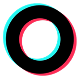

מחברים את הנגן בכבל למחשב שבו מותקנת התוכנה "VODOS לנגן". המחשב מוריד את הסרטונים החדשים מכל הערוצים ומעתיק אותם לנגן — ההתקדמות מופיעה כאן ובהתראה. אפשר לעצור בכל רגע; מה שכבר הגיע נשאר.
בכל עדכון המחשב מוריד את הסרטונים הכי חדשים ומעתיק אותם מיד לנגן — במחשב לא נשמר כלום. סרטונים ישנים מתחלפים בחדשים, וסרטונים שסימנתם "אהבתי" נשמרים ולא נכללים במכסה.